计算机图形学（四）：纹理应用-上
计算机图形学（四）：纹理应用-上
在计算机图形学中，纹理贴图是使用图像、函数或其他数据源来改变物体表面外观的技术。例如，可以将一张砖墙贴图应用到一个多边形上，而不用对砖墙的几何形状进行精确建模。通过这种方式将图像和物体表面结合起来，可以在建模、存储空间和速度方面节省很多资源。当然纹理不仅仅用于改变物体表面漫反射颜色,纹理本质上是一个数据集,可以用来存储任何我们需要的数据,因此在各方面都得到了广泛的应用.本文将介绍MaterialMap、AlphaMap、BumpMap、NormalMap、ReliefMap、DisplacementMap、ParallaxMap、TexturedLight、ShadowMap、EnvironmentMap。
我们将以上纹理贴图的应用划分为6个大类：
- 控制着色信息
- 控制片元透明度
- 改变顶点法线
- 改变表面结构
- 阴影贴图
- 环境贴图
控制着色信息
根据$Blinn-phong\;Model$可知，物体表面着色信息有以下因子来控制：

$L = L_a+L_d+L_s = K_aI_a + K_d\dfrac{I}{r^2}max(0, \hat{n}\cdot\hat{l}) + K_s\dfrac{I}{r^2}max(0, \hat{n}\cdot\hat{h})^p$
| 符号 | 解释 |
|---|---|
| $K_a$ | 物体表面环境光吸收率 |
| $I_a$ | 环境光强度 |
| $\dfrac{I}{r^2}$ | 到达物体表面的光线 |
| $K_d$ | 漫反射系数 |
| $\hat{n}$ | 着色点法线 |
| $\hat{l}$ | 光线单位向量 |
| $K_s$ | 高光系数 |
| $p$ | 高光衰减因子 |
可以看到有许多可以调节的参数来控制像素的着色表现。虽然可以赋予顶点更多的属性来改变这些参数，但是要做到亚三角形的细节程度，就需要使用各种纹理，对每个片元的着色参数进行调节，这些纹理映射方法统称为材质映射（$Material\;Map$）。
最简单的就是漫反射贴图，将纹理采样得到的值直接用于$K_d$项，很直观也很简单，这里不做过多赘述。
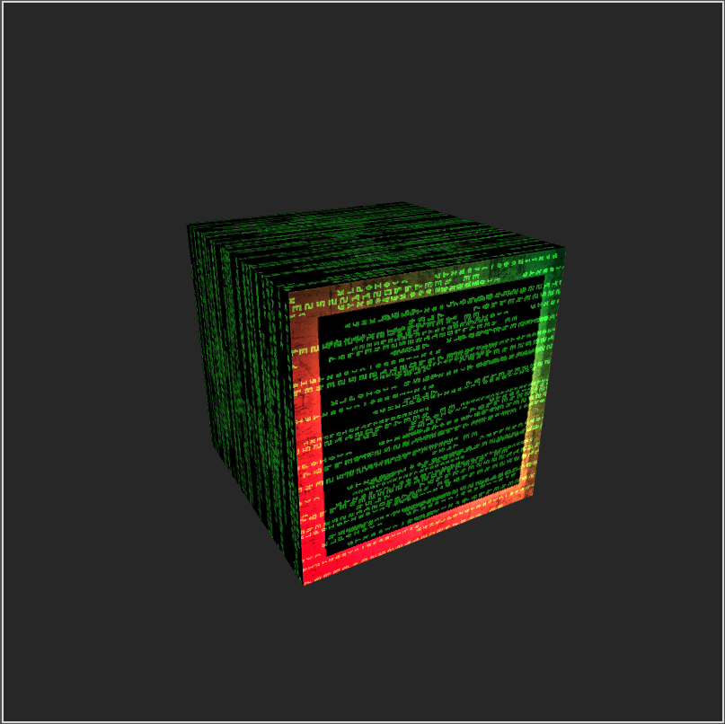
此外还可以改变镜面反射系数，如粗糙度（决定高光衰减）和高光反射系数。
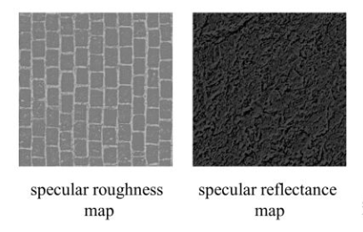
控制片元透明度
纹理都是矩形的，但当我们要实现各种贴花（$decal$）或者镂空（$cutout$）效果时，往往不想让纹理铺满整个表面，也就是说某些地方透明度为0，这时候$alphaMap$就登场了。
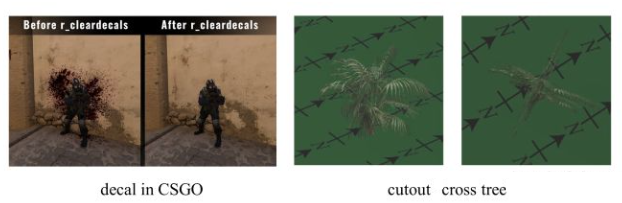
不需要对片元执行半透明进行混合，而是进行透明度测试 (Alpha Test)，将透明度小于阈值的texel认为是完全透明，直接抛弃片元，否则为完全不透明，测试完成后，再用z-buffer算法对所有完全不透明片元进行混合。透明度测试的伪代码如下：
1 | if(texture.a < alphaThreshold) discard |
但是透明度测试在使用$mipmap$时会存在问题：如下图，第0级纹理连续四个texel的透明度为 [0.0, 1.0, 1.0, 0.0]，第1级纹理会变成[0.5, 0.5]，假设我们设定alphaThreshold为0.75，可知第0级纹理有1.5/4通过测试，但是在第一级纹理中，所有的纹素的值都变成了0.5， 0.5 < 0.75所以，所有像素都被抛弃。

于是在不同的$mipmap$纹理等级中，经过透明度测试留下来的像素占比也不一样，因为高等级纹理是对低等级纹理的范围平均，因此随着levelD的增大，纹素值会趋于平均化，之前在阈值之上的值，被平均化以后很有可能到阈值线之下，因此被抛弃的像素就越来越多：
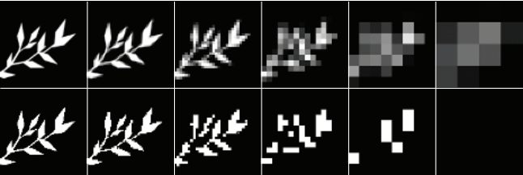
我们来看一个例子，如下图所示，当相机距离树木较近时，看起来一切正常：
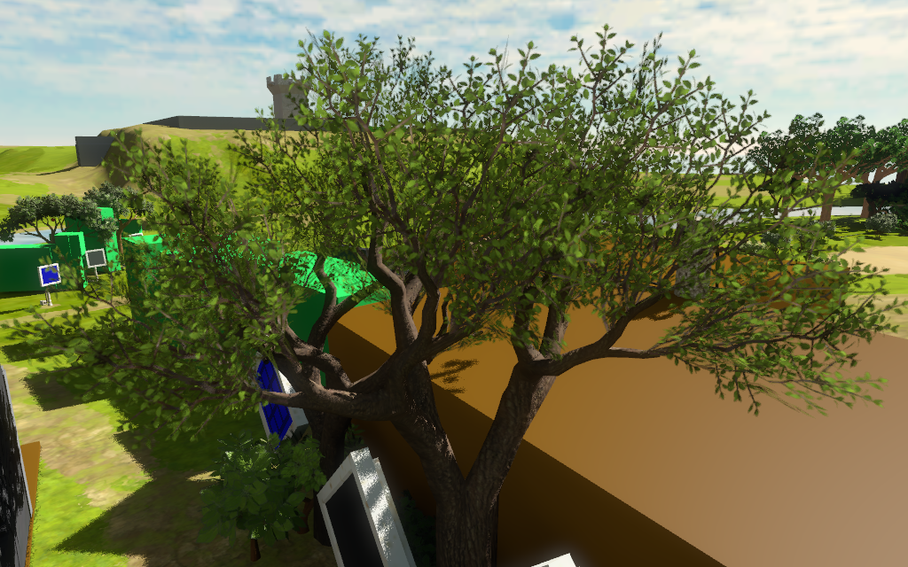
当相机拉远后，树叶消失了一部分（由于mimmap均值化后，导致被抛弃像素占比增加）：
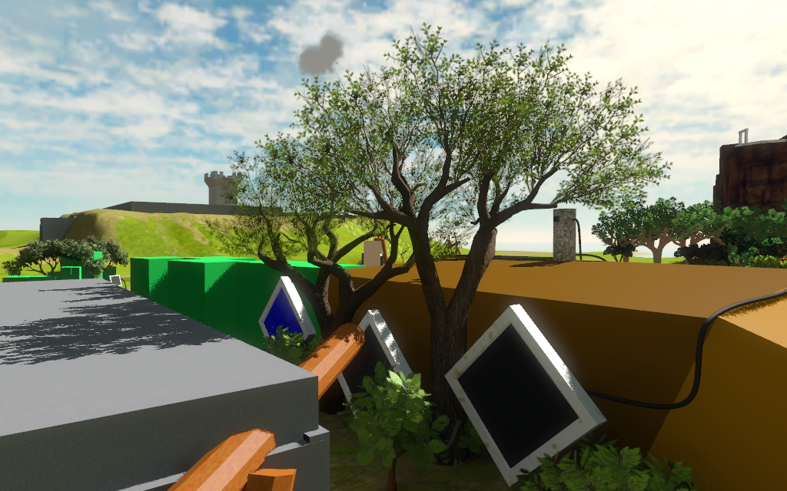
当相机拉远到相当一段距离后，发现树叶消失的更多：
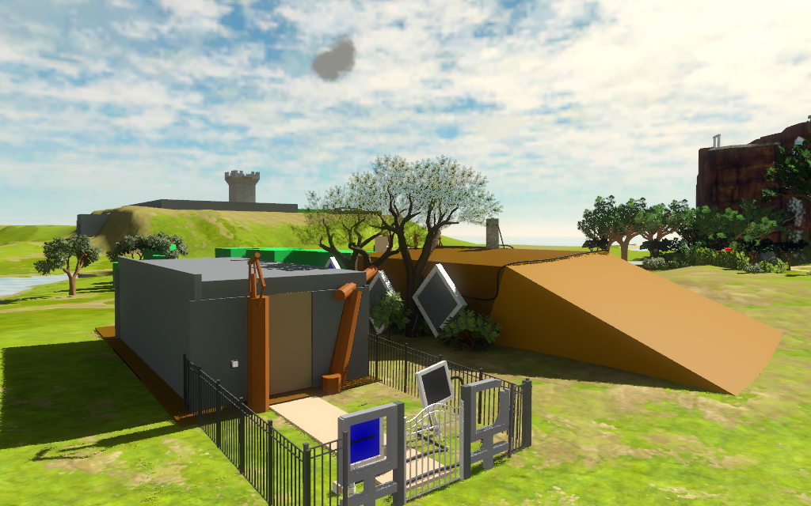
一般解决办法有两个：
- 手动调节每级mipmap透明度，或者在shader中根据纹理等级d对透明度缩放
- 限制d的最大值
但这两种方法都只能是近似，不能很好解决问题，出现这个问题的关键点在于：不同 $mipmap$，用同样的透明度阈值会得到不同的Coverage(代表测试留存的像素比例)
Castano提出了一种：保证coverage一致的情况下，自适应确定透明度阈值，并对原透明度缩放调整的方法。
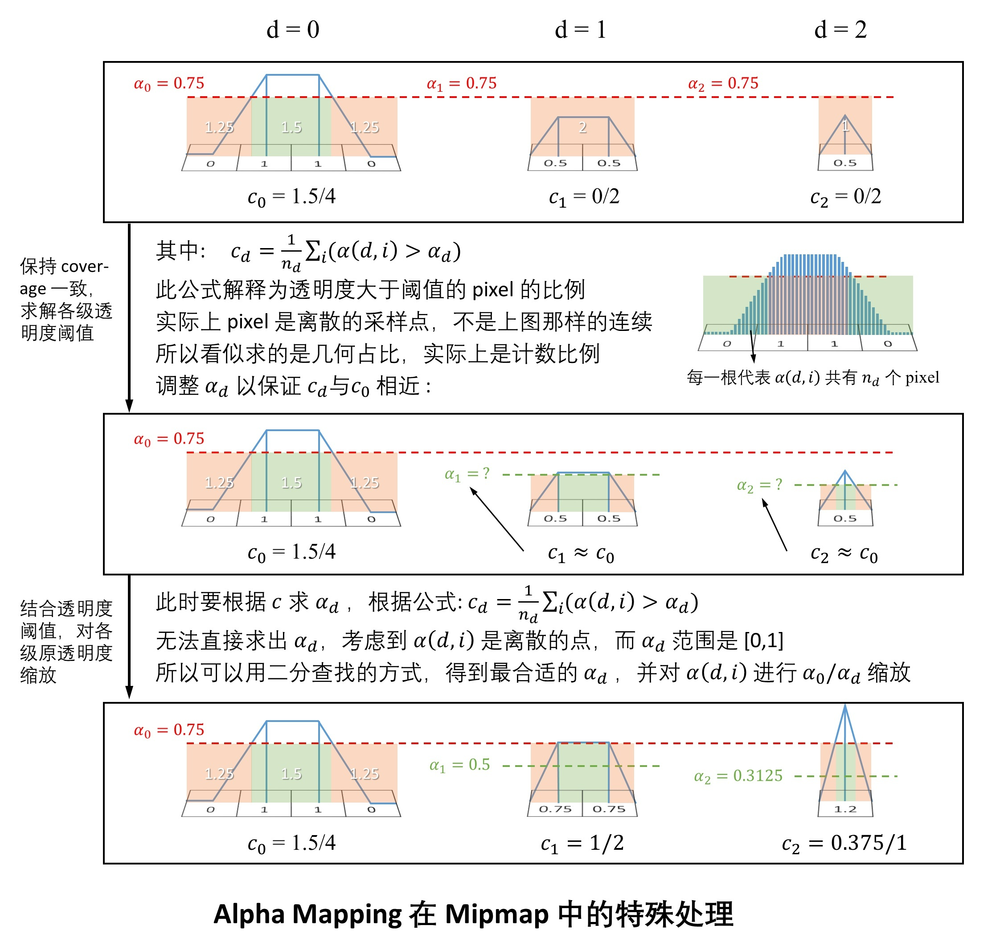
经过这种特殊处理后，我们发现远处的树木表现恢复正常了。


另外在对RGBA值进行线性插值时，要注意把alpha分量预乘到RGB分量，再进行插值：
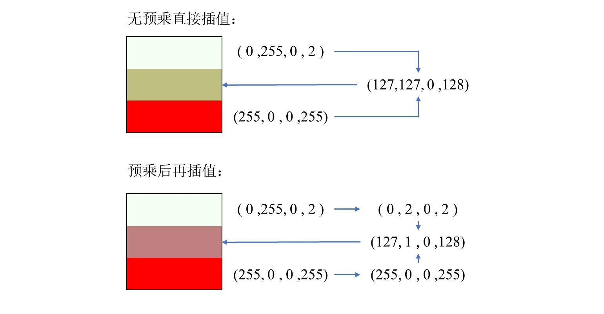
比较理想的情况是：希望插值后的结果更偏向于不透明纹素颜色，通常而言，预乘后插值会比较合理。
凹凸贴图（$BumpMapping$）
用于改变表面片元法线的技术统称为凹凸贴图($BumpMapping$),凹凸贴图把各像素法线相关的信息存储在纹理中，各像素的的法线通过这张纹理采样得到，使用采样得到的法线代替片元自身的法线进行光照着色计算，会看到凹凸不平的效果。凹凸贴图思想最早由图形学大牛Jim Blinn提出，后来的Normal Mapping，Parrallax Mapping，Parallax Occulision Mapping，Relief Mapping，均是基于同样的思想，只是考虑的越来越全面，效果越来越逼真。
存储法线的几种方式
$heightMap$

$heightMap$存储的是表面的相对高度，该高度的变化实际上表现了物体表面凹凸不平的特质，但是高度值不能直接用来计算光照，必须先将其转换为法线，再通过法线计算光照，这就是$heightMap$的核心原理。但是有个问题是，我们如何通过高度值计算出法线呢?
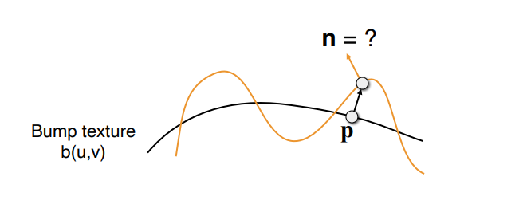
要计算P点的法线，可以先求p点的切线，而切线正是函数曲线在p点的导数。
先拿二维的情况举例，点p的原始法线为$(0, 1)$，假设$h$为高度函数，根据差分近似求出点p的导数为：
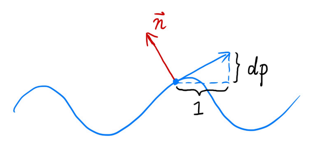
$dp = c * (h(p + 1) - h(p))$
点p的切线向量为：
$tangent(p) = (1, dp) = (1, c * (h(p + 1) - h(p)))$
将切线逆时针旋转90°，得到p点扰动后的法线：
$normal(p) = \begin{bmatrix}
0&-1\\
1&0
\end{bmatrix}tangent(p) = \begin{bmatrix}
0&-1\\
1&0
\end{bmatrix}\begin{bmatrix}
1\\
dp
\end{bmatrix} = \begin{bmatrix}
-dp\\
1
\end{bmatrix} = \begin{bmatrix}
-(c∗(h(p+1)−h(p)))\\
1
\end{bmatrix}$
注：上述推导中$c$为常数，表示法线被扰动影响大小的因子。
将上述推导到三维过程，只需要计算uv两个方向的梯度，剩下的和二维一致，计算切线，逆时针旋转90°计算法线。
- 原始法线$n(p) = (0,0,1)$
- 分别计算nv两个方向上的梯度：
- $\dfrac{dp}{du} = c_1 *(h(u + 1)- h(u))$
- $\dfrac{dp}{dv} = c_2 * (h(v + 1)- h(v))$
- 被扰动后的法线： $normal(p) = \begin{bmatrix}
\dfrac{-d_p}{d_u}\\
\dfrac{-d_p}{d_v}\\
1
\end{bmatrix}.normalized()$
注：所有计算出的法线都是在切线空间下的，需要乘以$TBN$矩阵转换到世界空间！
$BumpMapping$
原始的凹凸贴图技术，由jim Blinn提出，后续的凹凸贴图技术都是基于其思想改进的。想法很简单，纹理贴图上每个像素点存储两个信息，一个是$u$方向的偏移向量，一个是$v$方向上的偏移向量。这样原始法线加上这两个向量后自然得到了扰动后的法线。

$NormalMap$
我们知道纹理中可以存储颜色信息作为漫反射系数，自然也可以存储法线信息，利用$(u,v)$坐标查询每个点的法线，代替原始模型法线，这就是$NormalMap$。
明白了$NormalMap$的原理后，有一个问题就是，如何存储这些法线信息？一种可选方案是存储对象空间下的法线信息，这样在做完纹理查询后乘以世界空间矩阵直接就可以用了，但是不好的一点是，当对象空间发生变化时，那么该法线就不再正确了。更通用的做法是存储切线空间下的法线向量。
对象空间和切线空间中的法线贴图对比：
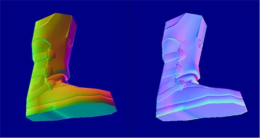
切线空间的存储方式更加灵活，可以更好的复用，但是要付出的代价就是需要比较复杂的空间转换过程。
应用法线贴图后的渲染结果：
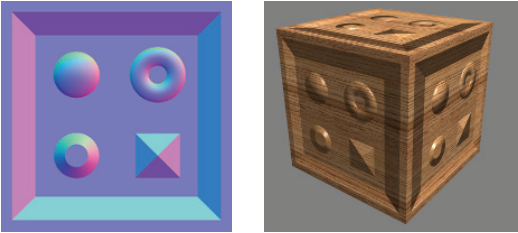
一张图解释三种凹凸贴图的区别：
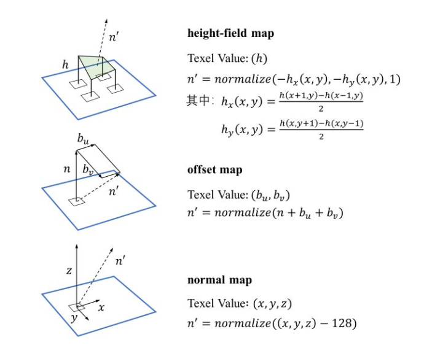
TBN空间
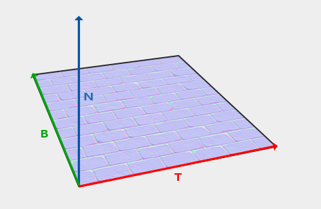
切线空间定义于每一个顶点之中，是由切线（$Tangent$），副切线（$BiTangent$），顶点法线（$Normal$）以模型顶点为中心的坐标空间。$normalMap$中的法线在切空间中表示，其中法线总是大致指向正z方向。切线空间是一个三角形表面的局部空间:法线相对于单个三角形的局部参考系。把它想象成法向量的局部空间;它们都是指向正z方向的不管最终变换的方向是什么。使用一个特定的矩阵，我们可以将这个局部切线空间的法线转换到世界空间或观察空间，并将它们沿最终映射曲面的方向定向。这个矩阵就是$TBN$矩阵。接下来将详细推导$TBN$矩阵的构造过程。
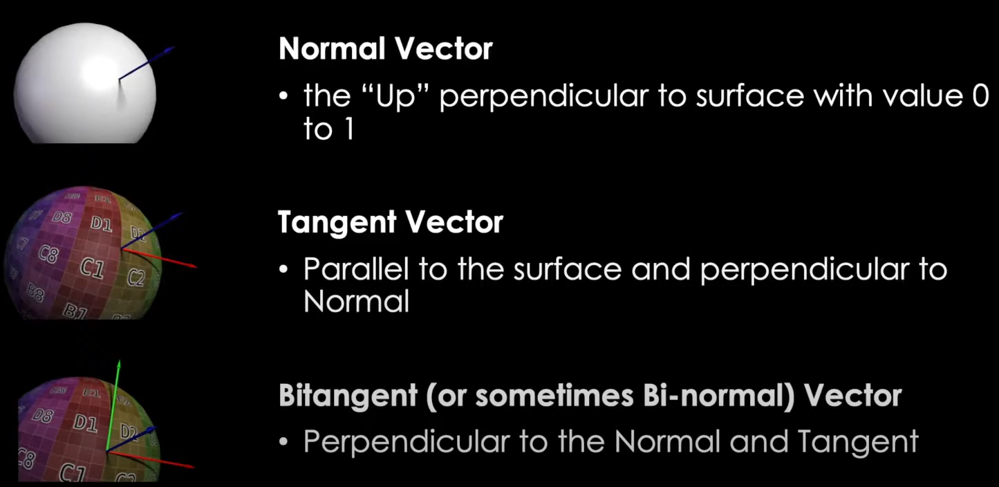
只需要下面两个步骤即可得到规范化的$TBN$矩阵。
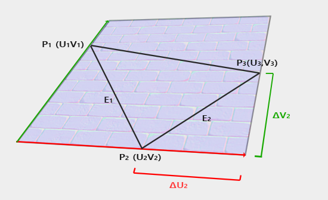
$E_1 = \triangle{U_1}T + \triangle{V_1}B$
$E_2 = \triangle{U_2}T + \triangle{V_2}B$
该公式的数学意义是，如何将一个点从uv空间映射到三维空间，其中TB作为基向量，以uv空间中u和v的增量作为控制参数，假设三角形中存在一点p，则$\vec{AP} = u(p) \vec{B} + v(p) \vec{B}$,点p可以表示为以TB为基向量的uv空间，TB轴的线性组合。
根据以上公式可以快速的推导出TB：
$\vec{T} = \dfrac{\triangle{V_1}E_2 - \triangle{V_2}E_1}{\triangle{V_1}\triangle{U_2} - \triangle{V_2}\triangle{U_1}}$
$\vec{B} = \dfrac{-\triangle{U_1}E_2 + \triangle{U_2}E_1}{\triangle{V_1}\triangle{U_2} - \triangle{V_2}\triangle{U_1}}$
目前给出的TB还是不是真正的切线与副切线，需要正交化后得到$TBN$矩阵:
$\vec{t}_⊥ = normalized(\vec{t} - (\vec{t}\cdot\vec{n})\vec{n})$
$\vec{b}_⊥ = normalized(\vec{b} - (\vec{b}\cdot\vec{n})\vec{n} - (\vec{b}\cdot\vec{t}_⊥)\vec{t}_⊥)$
其中n是建模软件中规定的顶点法线，可以看到n在正交化过程中不会受到影响，该过程是对TB向量进行方向的调整以及长度的归一化。TB在此过程后会相互垂直，此时将不再一定与UV方向保持相同。特别的，当调整顶点法线后，TB平面甚至将与三维空间中的三角形平面不同,也就是说归正交化后的$TBN$矩阵，$TB$轴将不再与$uv$相等，$uv$是正交化前的$TB$轴。
通过正交化后的$Tangent(T),Bitangent(B),Normal(N)$可以推导出$TBN$矩阵：
$TBN = \begin{bmatrix}
T_x&B_x&N_x\\
T_y&B_y&N_y\\
T_z&B_z&N_z\\
\end{bmatrix}$
$normalMap$中存储的法线信息是基于$TBN$空间的，而光照计算需要所有的参数在同一空间下，以上计算的$TBN$矩阵就是用于将$TBN$空间中定义的法线转换到世界空间用的。
$Normal_{world} = \begin{bmatrix}
T_x&B_x&N_x\\
T_y&B_y&N_y\\
T_z&B_z&N_z\\
\end{bmatrix}Normal_{tbn}$
根据矩阵的逆的性质，$TBN$矩阵的逆矩阵可以用来将向量从世界空间转换到$TBN$空间中，而$TBN$矩阵是正交化过的，根据正交矩阵的特殊性质（正交矩阵的逆等于其转置），可以轻松求得$TBN$的逆矩阵:
$TBN^{-1} = TBN^T = \begin{bmatrix}
T_x&B_x&N_x\\
T_y&B_y&N_y\\
T_z&B_z&N_z\\
\end{bmatrix}$
$Vector_{tbn} = \begin{bmatrix}
T_x&T_y&T_z\\
B_x&B_y&B_z\\
N_x&N_y&N_z\\
\end{bmatrix}Vector_{world}$
利用法线贴图的信息计算模型光照
首先是纹理采样拿到当前像素点存储的值，如果纹理贴图是经过压缩的，需要计算（补全）三个通道值，然后将每个通道的数值范围从$[0,255]$映射到$[-1, 1]$。要做基于法线的光照计算，需要保证所有的参数（法线 光照方向 观测方向等）都在同一空间下。实现方式有两种:
- 直接使用TBN矩阵，这个矩阵可以把切线坐标空间的向量转换到世界空间。因此我们把它传给片段着色器中，把通过采样得到的法线坐标左乘上TBN矩阵，转换到世界坐标空间中，这样所有法线和其他光照变量就在同一个坐标系中了。
- 使用TBN矩阵的逆矩阵，这个矩阵可以把世界坐标空间的向量转换到切线坐标空间。因此我们使用这个矩阵左乘其他光照参数，把他们转换到切线空间，这样法线和其他光照变量再一次在一个坐标系中了。
更常用的做法是采取第二种方式，将向量从世界空间转换到切线空间有个额外好处，我们可以把所有相关向量在顶点着色器中转换到切线空间，不用在像素着色器中做这件事。这是可行的，因为lightPos和viewPos对于每个fragment都是一样的，对于fs_in.FragPos，我们也可以在顶点着色器计算它的切线空间位置。基本上不需要在像素着色器中进行任何相关的空间变换操作，而第一种方法必须在片元着色器中做转换，因为采样出来的法线对于每个像素着色器都不一样。
所以现在不是把TBN矩阵的逆矩阵发送给像素着色器，而是将切线空间的光源位置，观察位置以及顶点位置发送给像素着色器。这样我们就不用在像素着色器里进行矩阵乘法了。这是一个极佳的优化，因为顶点着色器通常比像素着色器运行的少。这也是为什么这种方法是一种更好的实现方式的原因。以下是shader代码；
vertexShader
1 | #version 330 core |
fragmentShader
1 | #version 330 core |
$NormalMap$为什么都是偏蓝色的？
法线贴图是增加细节用的，因此在以原顶点法线为z轴的切线空间中，其$（r，g，b）$必然偏向$b$分量，故法线的值基本在（0，0，1）左右，经过-1到1映射到0-1在贴图存储的过程，贴图颜色变为（0.5，0.5，1），反映到颜色上自然是常见的法线贴图颜色了。
$NormalMap$压缩
我们通常会把法线贴图归一化成一个3元向量n（x,y,z）来表示，常识上来看，因为这个n是归一化的，所以用两个向量（x,y）已经可以表示这个3元向量了，可以减少数据存储，压缩我们的贴图量。
- 只保留两个颜色通道
- 因为normal是归一化向量，其大小为1；又因为切线空间的法线z方向总是正方向，所以可以只存x和y就可以用勾股定理计算出z值（因为正方向所以取正值）。所以只保存rg两个通道。
- 但是如果只有一个通道那贴图压缩质量更好。所以只用g通道，并将r通道的值存入alpha透明通道。
法线变换
你可能会问为什么不简单地把法线看作向量。为什么要将他们区别对待呢?在前几章中，我们已经学习了使用矩阵乘法来变换点和向量。法线的问题是，当矩阵对法线均匀缩放时，没有任何问题。但是现在让我们考虑一下将非均匀缩放应用到一个物体上的情况。让我们(在2D中)画一条经过点a =(0,1,0)和点B=(1,0,0)的直线，然后从原点到坐标(1,1,0)再画一条直线，你会发现这条直线垂直于我们的平面。假设(1,1,0)是$AB$的法线.
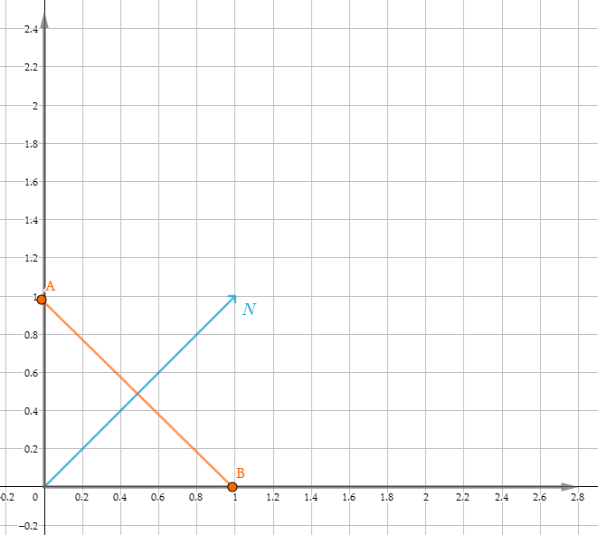
现在假设我们使用以下矩阵对直线应用非均匀缩放:
$\textbf{M} = \begin{bmatrix}
2&0&0&0\\
0&1&0&0\\
0&0&1&0\\
0&0&0&1\\
\end{bmatrix}$
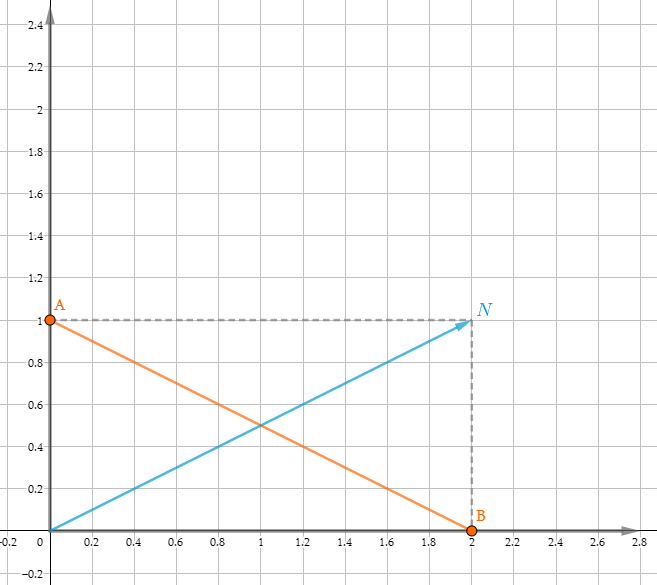
在对$AB$和$\vec{N}$应用同样的变换矩阵$M$后,我们发现之前垂直的两条线不再垂直了,这也从侧面说明,对法线直接应用Model矩阵结果是错误的。实际上变换法线不能直接应用和变换顶点相同的矩阵M，而需要应用其逆矩阵的转置。
$\vec{N^丶} = \textbf{M}^{-1T}\vec{N}$
在进行数学推导之前，先让我们从直觉上进行解释。首先法线代表方向，是一个向量，因此平移矩阵不会对其产生影响，因此向量的w分量为0，换句话说对于一个4x4的矩阵M，我们可以忽略第四行和第四列，只考虑左上角3x3的部分（缩放和旋转）。我们将3x3的矩阵分解为两个部分，分别为旋转和缩放。旋转矩阵是正交矩阵，而正交矩阵的逆等于其转置，因此对于旋转矩阵$R$来说：
$R^T =R^{-1}$
$R = R^{-1T}$
旋转矩阵逆矩阵的转置等于其自身。
对于缩放部分，缩放矩阵的转置等于其自身，缩放矩阵的逆可以很容易的通过其缩放因子计算：
$M^{-1T} = \begin{bmatrix}
1/2&0&0&0\\
0&1&0&0\\
0&0&1&0\\
0&0&0&1\\
\end{bmatrix}$
对上图中的$\vec{N}$应用该矩阵：

数学推导：
首先澄清几个概念，
- 两个正交向量的点积等于0
- 两个向量的点积可以写成1x3和3x1矩阵乘积的形式
- 如果两个向量点积结果为0，则对应的矩阵乘积形式的结果也为0
$\textbf{v}\cdot\textbf{n} = \begin{bmatrix}
v_x&v_y&v_z
\end{bmatrix}\begin{bmatrix}
n_x\\
n_y\\
n_z\\
\end{bmatrix} = \textbf{v} * \textbf{n}^T = 0$
$\textbf{v}\cdot\textbf{n} = \textbf{v} \textbf{n}^T = v_xn_x + v_yn_y + v_zn_z$
$\textbf{v}\textbf{n}^T = \textbf{v} M M^{-1} \textbf{n}^T$
根据矩阵转置的性质：$(AB)^T = B^TA^T$可以推导出：
$\textbf{v}\textbf{n}^T = (\textbf{v} M)(\textbf{n}M^{-1T})^T$
注意观察以上表达式，我们注意到等号右侧第一个括号内的$\textbf{v}*M$,实际上是原始顶点$v$在经过矩阵M变换后得到的$v^丶$:
$\textbf{v}^丶 = \textbf{v}*M$
我们知道两个向量在经过变换后仍然得保持垂直，因此：
$\textbf{v}\textbf{n}^T = \textbf{v}^丶\textbf{n}^{丶T} = 0$
因此，等号右侧的第二部分$(\textbf{n}*M^{-1T})^T$可以重写为：
$\textbf{n}^{丶T} = (\textbf{n}*M^{-1T})^T$
$\textbf{n}^丶 = \textbf{n}*M^{-1T}$
也就是说$\textbf{n}$只有经过$M^{-1T}$变换后才能成为$\textbf{n}^丶$，才能做到变换后依然和$v^丶$垂直。